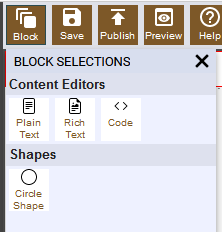
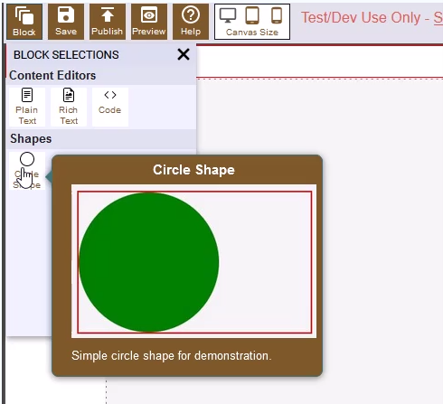
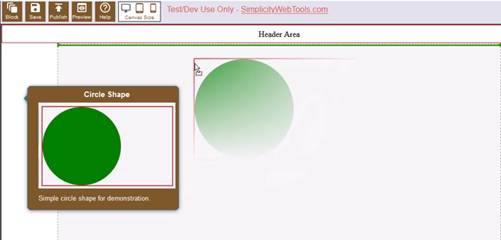

The Simplicity Builder™ web component allows you to easily add a drag and drop builder to your web application. It allows you to turn any HTML into a drag and drop builder.
This is a simplified example of a Simplicity Builder™ implementation.
The "Hello World" example shows all of the built-in capabilities of the Simplicity Builder™ web component:
The "Basic" example shows a slightly more robust template but is still simple.
Both show how a custom block can be created and have a settings icon that controls various settings of that custom block. The "Hello World" circle block is just designed to show off all the possible controls you can define in an attribute editor setup. To add a block onto the editable area of the template:
Click on the "Block" button

Select the block you want to drag onto the template

Drag and drop it onto the template

The "Save" and "Publish" buttons save the HTML by placing the contents into the text box shown in the example (in a real application you would most likely save to a database or a file).
The "Save" button saves the template as-is, including all of the markup needed for design time in the Simplicity Builder™ web component.
The "Publish" button saves a cleaned version of the HTML which removes the attributes, blocks, text, etc. that is not needed for the page in a live deployed environment.
The "Preview" button shows a preview of the page.
The canvas size lets you see the template in various screen sizes.
For more information visit:
A free 30-day trial version dev key for the Simplicity Builder™ web component is available without requiring any credit card information.